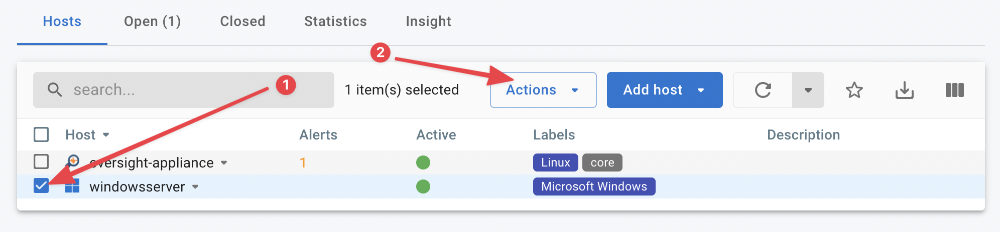
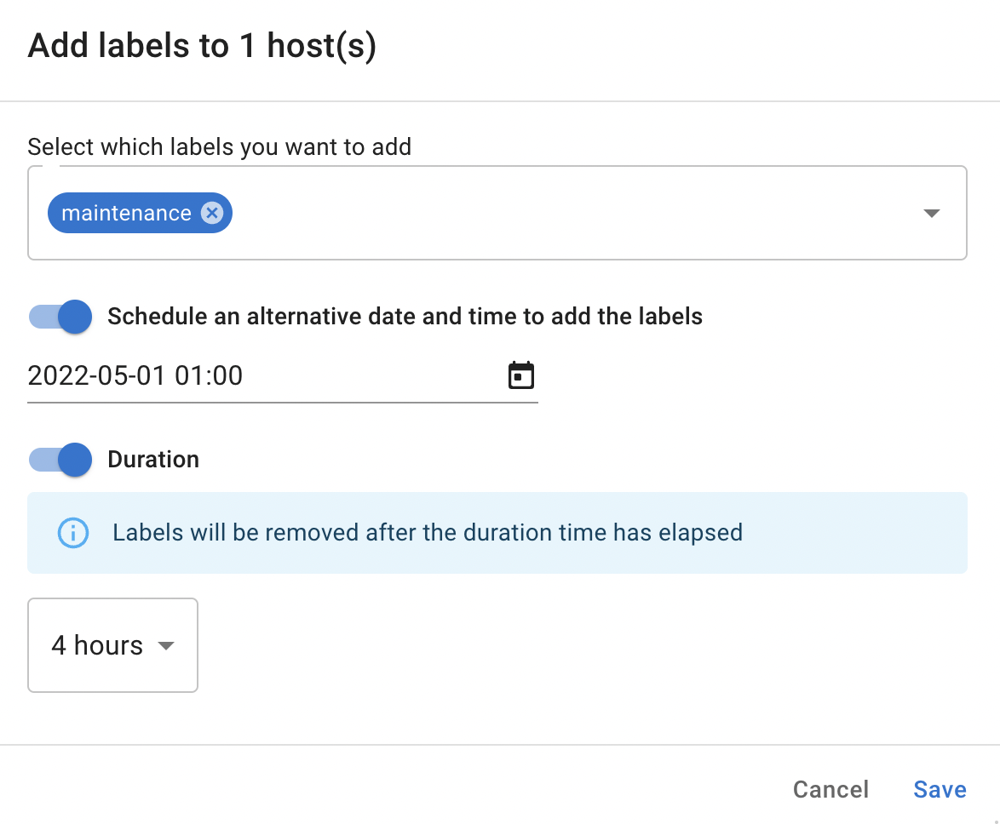
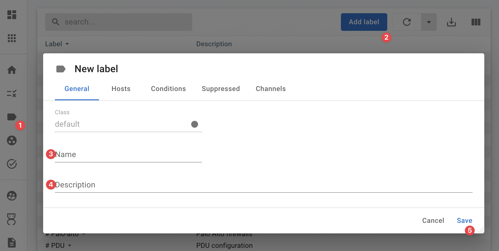

Labels
Purpose
Labels can be added to hosts to group and identify them quickly.
Labels are also used to control which conditions are active and which conditions should be suppressed. A label can enforce multiple conditions on a host and is not bound to a specific probe.
graph LR
condition1[Condition] --- label;
condition2[Condition] --- label;
condition3[Condition] --- label;
label{{Label}} --- host1[Host];
label --- host2[Host];
label --- host3[Host];Labels "glue" conditions onto hosts.
How to use
Labels can be assigned to hosts either by editing a host or by selecting one or more hosts and using the action menu.

Using the action menu it is possible to add and remove a label at a scheduled time and/or for a specific duration.
The screenshot below shows the maintenance label being added automatically at 01:00 on may 5th 2022 and being removed 4 hours later.

You can verify the status of scheduled tasks in the ::material-check-circle-outline tasks menu.
Deep dive
Label classes
InfraSonar has five label classes which can be identified by their color.
| Class | Description |
|---|---|
Base labels in InfraSonar are prefixed with a # sign, followed by a descriptive name.Every host in InfraSonar should be associated with a base label, as these contain the best practices and set the main view for an asset/host. |
|
| Regular labels are usually used to add extra conditions to a host or for grouping purposes. | |
Ignore labels that are primarily used to suppress a condition are prefixed with a ≠ sign. |
|
| Maintenance label suppresses all conditions effectively muting a host. | |
Ansible labels using the InfraSonar API, it is possible to integrate InfraSonar with an automation solutions such as Ansible. InfraSonar uses the & prefix to identify special labels. |
Custom labels
InfraSonar administrators can create custom labels for an environment.

- Navigate to the labels page () in the left navigation drawer.
- Click the Add label button.
- Enter a name.
- Enter an optional description.
- Click Save.
Additional tabs
The additional tabs: Hosts, Conditions, Suppressed and Channels show how the label is used. It is not possible to edit the label usage here.
Predefined labels
Base labels
labels in InfraSonar that are prefixed with an #, follwed by a descriptive name.
Every host in InfraSonar should be associated with a base label, as these contain the best practices and set the main view for an asset/host.
# access switch
Generic switch conditions:
- Interface status
- Reboot detection
- Entity monitoring
- Standard hardware sensors
# base
Basic conditions.
# Cisco UCS
Cisco Unified Computing System
- Interface status
- Reboot detection
- Entity monitoring
- Standard hardware sensors
- Cisco UCS specific hardware status
# Citrix Netscaler
Citrix Netscaler conditions:
- Interface status
- Reboot detection
- Entity monitoring
- Standard hardware sensors
- Failover detection
- Detect new or removed services
- Detect service state changes
# datacenter switch
Generic switch conditions:
- Interface status
- Reboot detection
- Entity monitoring
- Standard hardware sensors
Additional to the base conditions the # datacenter switch label also monitors port up and down events.
# Docker
Docker base label.
This label adds the following predefined Docker conditions:
- Container CPU thresholds
- Notification upon container creation
- Notification upon tag changes
# Firewall
Basic firewall label.
- Interface status
- Reboot detection
- Entity monitoring
- Standard hardware sensors
Palo Alto firewalls
For Palo-Alto devices use the # Palo-alto label.
# FreeBSD
Predefined NIX host configuration.
- CPU thresholds
- Memory / swap thresholds
- Diskfree thresholds
- Reboot detection
- Interface port status (ifoper)
- Interface discarded & error packets
FreeBSD vs Linux label
The difference between the FreeBSB and Linux label is cosmetic.
# Linux
Predefined NIX host configuration.
- CPU thresholds
- Memory / swap thresholds
- Diskfree thresholds
- Reboot detection
- Interface port status (ifoper)
- Interface discarded & error packets
# Mailroundtrip
Conditions used for the SMTP-probe.
# Microsoft SQL Server
Widget to add conditions for SQL Server monitoring.
This label adds the following predefined best practice Microsoft SQL conditions:
- Memory pressure detection
- Configuration state (e.g. parallelism settings, memory settings)
- Buffer cache hit ratio
- Log shipping status
- Deadlock detection
- Job status
Additional labels that can be combined with this label:
- Microsoft SQL deadlocks > 10 min
- ≠ auto-update-statistics
- ≠ mssql buffercache
- ≠ mssql cost threshold
- ≠ deadlocks
- ≠ max server mem
- ≠ sql conn autoclose
# Microsoft Windows
Predefined Microsoft Windows host configuration.
This label adds the following predefined Microsoft Windows conditions:
- CPU thresholds
- Memory / swap thresholds
- Disk free thresholds
- Reboot detection
- Interface port status (ifoper)
- Interface discarded & error packets
- Time difference
- Windows services
Additional labels that can be combined with this label:
- Citrix XenApp
- CPU 30 min
- Daily reboot
- Exchange C: (15%)
- Exchange D: (15%)
- Microsoft Exchange
- Rolling reboot (48h)
- Windows Volumes (5%)
# NetApp
Netapp specific conditions for 7mode and cMode ONTAP versions
- CPU thresholds
- Memory / swap thresholds
- Aggregate / volume thresholds
- Aggregate / volume changes
- Reboot detection
- Interface port status (ifoper)
- Interface discarded & error packets
- Time difference
- Windows services
- Health status (hardware, subSystem, global)
- Snapshot status
Additional labels that can be combined with this label:
- NetApp dangling snapshots
- NetApp SnapMirror lag (26h)
- NetApp SnapMirror lag (9h)
- NetApp snapshots required
- NetApp SnapVault lag (25h)
- NetApp SnapVault lag (9h)
- ≠ sas-connect
- ≠ snapshot volumes
- ≠ spare disks regex
# Netbotz
Netbotz specific
# Nimble storage
Nimble storage
# Palo-alto
Palo Alto firewalls
- Interface status
- Reboot detection
- Entity monitoring
- Standard hardware sensors
- Palo Alto failover
- Palo Altop VPN tunnel status (ifoper)
# PDU
PDU configuration.
# Pure
Pure specific conditions:
- Array status
- CheckMessages alert
- Connections (added, lost, missing, replication address changed)
- Failover detection
- Drive status
- Hardware status
- HostConnection status
- Mirror Write latency
- Capacity
- Volume changes
# Router
Basis router label
- Interface status
- Reboot detection
- Entity monitoring
- Standard hardware sensors
# SAN Switch
SAN Switch specific label
- Interface status
- Reboot detection
- Entity monitoring
- Standard hardware sensors
- Logging
- Sensor statusses
- Fibre channel bad EOF delimiter status
# Synology
Synology Storage specific conditions:
- Basic conditions (see Linux)
- Synology system status
- Synology system fan status
- Synology raid status
- Synology power status
- Synology disk temperature
- Synology disk status
- Synology disk smart status
- Synology cpu fan status
Disk status
As a Synology system is sometimes configured with spare disks we ignore the statuses:
- The disk has system partitions but no data
- The disk is not partitioned
# UPS
Basic UPS label.
# VMware ESX host
VMWare ESX host label.
# VMware vCenter
VMWare virtual center label.
# website
Monitors website specifics.
Regular labels
Regular labels are gray in color and have no special character pre-fixing them.
Notable regular labels:
- core, InfraSonar Agent-core host.
- ß test, label used for testing purposes.
Citrix XenApp
Citrix XenApp ICA latency condition.
core
InfraSonar Agent-core host. This label is added automatically.
CPU 30 min
Alert high CPU after 30 minutes.
Daily reboot
Reports if a Microsoft Windows host is up longer then 24 hours.
This label marks a host as daily rebooted, by verifying if the uptime does not exceed 24 hours as this indicates a failed reboot.
Reboots are still reported.
When a hosts reboots, this will still raise an alert as we can't determine if the reboot was planned. Adding a maintenance routine to your reboot schedule will avoid these alerts.
Dell iDrac
Dell iDrac Server conditions:
- Detect eventlog changes
- Detect firmware changes
- System state amperage status
- System state battery status status
- System chassis intrusion status status
- System chassis status status
- System cooling status status
- System state amperage status
- System state powersupply status
- System state global status
- System state memory status
- System state power unit status
- System state processor status
- System state temperature status
- System state voltage status
dns
Checks performance and changes for the following checks:
- checkA
- checkAAAA
- checkMX
- checkS
- checkPTR
- checkTXT
Exchange C: (15%)
Exchange >= 2016. When QueueDB is installed on C. It will stop receiving new email when below 15% free disk space.
Exchange D: (15%)
Exchange >= 2016. When QueueDB is installed on D. It will stop receiving new email when below 15% free disk space.
Exchange Volumes (15%)
MS-Exchange Volumes (15%)
HP Procurve switch
HP ProCurve switch specific conditions:
- Firmware changes
- Software changes
- ProCurve sensor status changes
HP Proliant
HP Proliant Server conditions.
Linux process httpd
Checks if the httpd process is running.
Linux process java
Checks if the java process is running.
maintenance
This label wil disable all condition checking for data that comes in.
Microsoft Exchange
Microsoft Exchange specific conditions.
Note
This label disables memory thresholds, as Exchange tends to take as much memory as possible.
Microsoft SQL Exeptions
Microsoft SQL Server specifics.
mssql deadlocks > 10 min
Monitors for Microsoft SQL deadlocks that exist more than 10 minutes.
NetApp dangling snapshots
Detects dangling snapshots on NetApp ONTAP systems (7mode and cMode).
When the time difference between 2 snapshots is greater than 21 (a.k.a. monthly backup), then an InfraSonar alert is triggered.
There is also a label (dangeling snapshots (vmfs) 7d) which generates an alert if the snapshot contains the word vmfs and the time difference is greater then 7 days.
Possible causes:
- Manual snapshots that have not been cleaned up.
- A reconfigured snapmanager.
- A server that is powered off while the mirror is still running.
NetApp SnapMirror lag (>26h)
NetApp snap-mirror lag should be less then 26 hours.
NetApp SnapMirror lag (>9h)
Netapp snap-mirror lag should be less then 9 hours.
NetApp snapshots required
When applied on a NetApp host every volume is checked whether it has snapshots.
NetApp SnapVault lag (>25h)
Netapp snap-vault lag should be less then 24 hours.
NetApp SnapVault lag (>9h)
Netapp snap-vault lag should be less then 9 hours.
PoE changes
monitors status changes for PoE.
Rolling reboot (48h)
Rolling reboots uptime > 48h.
UPS temperature <15° or >38°
Broader temperature window for UPS temperature window.
vmfs 100Gb threshold
Threshold for large VMFS volumes, e.g > 1Tb.
VMware vm changes
Notifies on virtual machine creation or deletion.
Windows Volumes (5%)
Only warn if a volume has less then 5% free.
XenServer
Ignore some check(s). Please also use Linux Label.
ß test
Label used for testing purposes.
Ignore labels
Labels that are primarily used to suppress a condition are prefixed with a ≠ sign.
Notable regular labels:
- ≠ unstable connection, this label delays connection alerts to 15 minutes for connections that are deemed unstable.
- ≠ Age check, do not check if this host is aged.
≠ age check
Do not check if this host is aged.
≠ CPU
High CPU usage does no longer result in an alert.
≠ http401
Considers http response code 401 as valid state (since InfraSonar has no credentials for the monitored site).
≠ interface discards
Suppresses interface discards.
≠ interface errors
Suppresses interface errors and discards.
≠ interface qlen errors
Ignores QLen thresholds.
≠ interface status
Network ports on office switches tend to go down when PC's are turned off, hence we ignore the port status for these switches.
≠ mssql auto-update-statistics
Ignores auto update statistics setting.
≠ mssql conn autoclose
Suppresses Microsoft SQL best practice on auto close connections.
≠ mssql buffercache
Suppresses buffer cache hit ratio < 97% for longer than 15 mins this indicates memory pressure.
≠ mssql cost threshold
Ignores the Microsoft SQL server configuration setting for parallelism cost.
≠ mssql deadlocks
Ignore Microsoft SQL server deadlocks.
≠ mssql max memory setting
Ignores the Microsoft SQL server configuration setting for maximum server memory.
≠ NetApp sas-connect
Suppresses NetApp sas-connect health status.
≠ NetApp spare disks
Suppresses "There are not enough spare disks."
≠ new volumes
Suppresses the detection of new volumes.
≠ no native
Used when no nativeprobe is installed while an Agent-core is.
≠ Pagefile memory
Ignores pagefile conditions.
≠ Physical memory
≠ smtp open relay
Ignores open relay check, useful when an open relay is ok.
≠ snapshot volumes
Suppresses the detection for new or missing volumes.
≠ SNMP
Ignore InfraSonar Probe SNMP Check.
≠ spf record
Ignores the SPF record condition.
≠ SSL cipher
Suppress weak cipher detection.
≠ SSL expiration
Ignores SSL expiration date.
≠ unstable connection
This label delays connection alerts to 15 minutes for connections that are deemed unstable.
≠ UPS Output load
Ignores UPS output load, used for UPS devices which have almost no output.
≠ VMware alert
Suppresses VMware alerts with a yellow or red status.
≠ VMware yellow alert
Suppresses VMware alerts with a yellow status.
≠ Windows service state degraded
Ignores Windows degraded service states.
Maintenance label
The Maintenance label suppresses all conditions effectively muting an asset / host.
Automation
It is possible to automate setting the maintenance label using the API. A more detailed instruction can be found here. InfraSonar tasks are also a great way to automate the maintenance label.
Ansible labels
Using the InfraSonar API it is possible to integrate InfraSonar with an automation solutions such as Ansible. InfraSonar uses the & prefix to identify special labels.